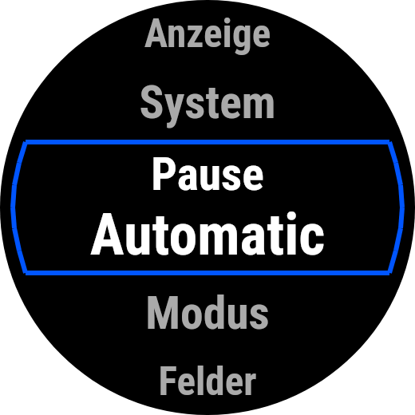
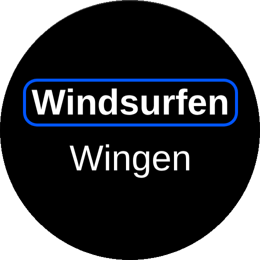
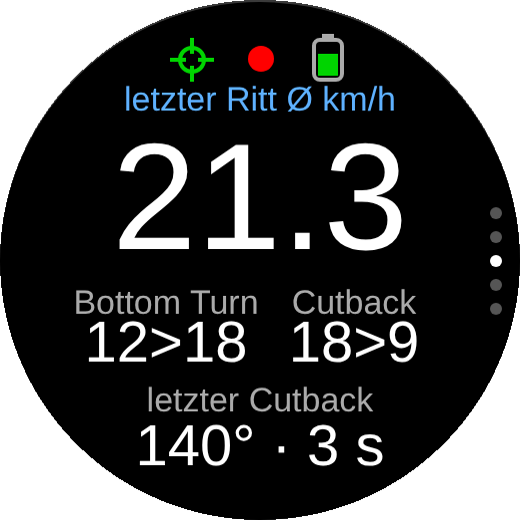
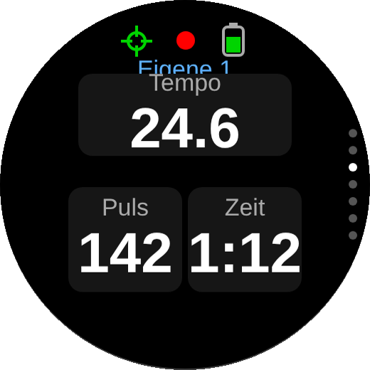

Bedienungsanleitung · Garmin Connect IQ · Windsurfen und Wingen
1 Überblick
SurfsApp zeichnet Windsurf- und Wingfoil-Sessions auf und zeigt dabei Geschwindigkeit, Herzfrequenz, Strecke und sportartspezifische Kennzahlen. Die Aufnahme wird als Aktivität in Garmin Connect gespeichert. Die App erkennt Gleiten, Halsen und Wenden, beim Windsurfen zusätzlich Wellenritte und Loops.
Die Darstellungen in dieser Anleitung sind schematisch. Die Zahlenwerte sind Beispiele.
2 Bedienung
Uhren mit Tasten (fēnix)
Bedienelement
Funktion
START/STOP
Auswählen, bestätigen, Aufnahme starten. Während der Aufnahme: Aktionsmenü öffnen.
HOCH / RUNTER
In Listen auswählen, Werte ändern, während der Aufnahme Seiten blättern.
HOCH lang gedrückt
Einstellungen öffnen, auch während der Aufnahme. Auf der Loop-Seite öffnet es direkt „Letzte Sprünge“.
BACK
Eine Ebene zurück. Auf der Startseite beendet es die App. Während der Aufnahme setzt es einen Marker.
Touchscreen
Wird nicht ausgewertet. Wassertropfen lösen nichts aus.
Touch-Uhren mit zwei Tasten (vívoactive 4)
Bedienelement
Funktion
Obere Taste
Auswählen, bestätigen, Aufnahme starten. Während der Aufnahme: Aktionsmenü öffnen.
Untere Taste
Eine Ebene zurück, auf der Startseite App beenden. Während der Aufnahme: Marker setzen.
Wischen nach oben / unten
Blättern in Listen und Seiten, auch während der Aufnahme.
Wischen nach links / rechts
Seiten blättern, nur während der Aufnahme und in der Pause (links = weiter, rechts = zurück).
Tippen
Ohne Funktion. Ausgewählt wird immer mit der oberen Taste.
Langer Druck auf den Bildschirm
Ohne Funktion. Die Einstellungen stehen als eigener Eintrag „Einstellungen“ auf der Startseite und im Aktionsmenü.
Während einer laufenden Aufnahme ist der Bildschirm gesperrt, nur Wischen zum Blättern der Seiten ist möglich. In der Sportwahl, in der Vorschau und in einer manuell gesetzten Pause ist er frei.
Ein blauer Rahmen markiert den gewählten Eintrag. Blaue Pfeile zeigen an, dass die Liste in diese Richtung weitergeht. Eine Liste läuft im Kreis: Nach dem letzten Eintrag folgt wieder der erste.
3 Startseite

Startseite Auswahl mit blauem Rahmen, Nachbarn grau.

Sportauswahl Beide Sportarten stehen immer zur Wahl.
Mit HOCH und RUNTER wählen Sie die Sportart Windsurfen oder Wingen. Steht eine gespeicherte Session bereit, erscheint zusätzlich „Letzte Session“. Auf der vívoactive 4 folgt außerdem „Einstellungen“.
Sportart wählen und START drücken. Die Vorschau öffnet sich. Es wird noch nichts aufgezeichnet.
In der Vorschau lassen sich die Seiten ansehen.
START drücken, um die Aufnahme zu beginnen. BACK führt zurück zur Sportwahl.
Zeichnet die Uhr nur begrenzt Daten auf, weil der Speicher knapp ist, erscheint in der Vorschau kurz ein Hinweis zur möglichen Aufnahmedauer. Eine Taste schließt ihn.
4 Aufnahme
Aktionsmenü
START/STOP öffnet während der Aufnahme das Aktionsmenü:
Pause bzw. Weiter – Aufnahme anhalten oder fortsetzen.
Speichern – Aufnahme beenden und speichern.
Verwerfen – Aufnahme beenden, ohne zu speichern.
Sprünge – öffnet die Liste der letzten Sprünge (nur wenn Loop nicht auf „Aus“ steht).
Einstellungen – nur auf der vívoactive 4.
Jede Aktion verlangt eine Bestätigung mit „Ja“ oder „Nein“. HOCH und RUNTER wechseln die Auswahl, START bestätigt. Bei „Speichern“ und „Verwerfen“ steht „Nein“ vorgewählt.
Pause
Die Pause kann von Hand oder automatisch ausgelöst werden (Einstellung „Pause“). Bei „Automatic“ hält die Aufnahme an, wenn die Geschwindigkeit längere Zeit unter dem Pausenwert liegt, und läuft weiter, sobald die Fahrt-ab-Geschwindigkeit überschritten wird. Auf der Hauptseite zeigt „AUTO“ eine automatische Pause an, bei manueller Pause das Pausezeichen.
Marker
BACK setzt während der Aufnahme einen Marker. Die Uhr vibriert dreimal kurz. Zwei Marker müssen mindestens zwei Sekunden auseinander liegen. In der Pause setzt BACK keinen Marker. Mehr dazu in Abschnitt 9.
5 Seiten während der Aufnahme
HOCH und RUNTER blättern durch die Seiten, die Punkte am rechten Rand zeigen die Position. Die Reihenfolge ist: Hauptseite, Maxima, Wellen (beim Wingen Downwinds), eigene Seiten, Loop-Seite, Kompass. Beim Windsurfen steht die Loop-Seite nur zur Verfügung, wenn Loop nicht auf „Aus“ steht. In der Vorschau folgt nach dem Kompass die Seite „Summe“ mit den Summen über alle gespeicherten Sessions.
Hauptseite Zeit, Tempo, Herzfrequenz, Strecke und Zonenbogen. Der rote Punkt zeigt die laufende Aufnahme.Hauptseite in der Pause Oben „AUTO“ bzw. das Pausezeichen. Statt des Tempos steht Vmax.Maxima Vmax, HF max, beste 2 s, HF Ø, Halsen, 10 s, Gleiten.

Wellen (Windsurfen) Letzter Ritt, Bottom Turn, Cutback, letzter Cutback.Downwinds (Wingen) Ersetzt beim Wingen die Wellen-Seite.Loop-Seite Anzahl der Loops und Werte des letzten Sprungs.Kompass Vollbild. Oben die Blickrichtung, der blaue Pfeil zeigt den Wind, N ist rot.
6 Eigene Seiten
Sie können bis zu vier eigene Seiten mit frei belegbaren Zellen anlegen. Die festen Seiten bleiben unverändert. Eigene Seiten erkennen Sie am blauen Seitenpunkt.
Beispiel mit vier Zellen Tempo, Vmax, Puls und Zeit.

Eigene Seite zwischen Maxima und Wellen Die Position ist einstellbar.
Einrichten
Starten Sie SurfsApp auf der Uhr, ändern Sie eine beliebige Einstellung (zum Beispiel den Pausenmodus) und beenden Sie die App wieder. Dadurch legt die Uhr die Dateien der App an.
Verbinden Sie die Uhr per USB-Kabel mit dem Computer. Die Uhr erscheint als Laufwerk bzw. Gerät.
Öffnen Sie dort GARMIN, dann Apps, dann den Ordner SETTINGS. Sortieren Sie nach „Änderungsdatum“: Die zuletzt geänderte Datei mit der Endung .SET gehört zu SurfsApp. Ihr Name besteht aus Buchstaben und Ziffern, zum Beispiel GASA5920. Merken Sie sich den Namen ohne Endung. Finden Sie dort nichts, suchen Sie im Ordner DATA nach einer Datei mit der Endung .DAT.
Gehen Sie zurück in Apps und prüfen Sie, ob dort ein Ordner LOGS existiert. Wenn nicht, legen Sie ihn an.
Legen Sie im Ordner LOGS eine leere Textdatei an, die genauso heißt wie die Datei aus Schritt 3, aber mit der Endung .TXT. Beispiel: zu GASA5920.SET gehört GASA5920.TXT.
Trennen Sie die Uhr vom Computer.
Schalten Sie auf der Uhr unter System → Debug-Protokoll auf Ein.
Benutzen
Zeichnen Sie wie gewohnt auf. Danach schließen Sie die Uhr wieder an den Computer an und öffnen die Textdatei im Ordner LOGS. Dort stehen die Zeilen der letzten Aufnahme. Die Datei wächst mit jeder Aufnahme. Löschen Sie den Inhalt, wenn Sie ein frisches Protokoll wollen.
Stürzt die App ab, schreibt die Uhr außerdem automatisch die Datei CIQ_LOG.YML in denselben Ordner LOGS. Sie enthält die Fehlermeldung.
Schalten Sie das Debug-Protokoll nach der Fehlersuche wieder aus. Es belegt Speicher und verbraucht etwas Akku.